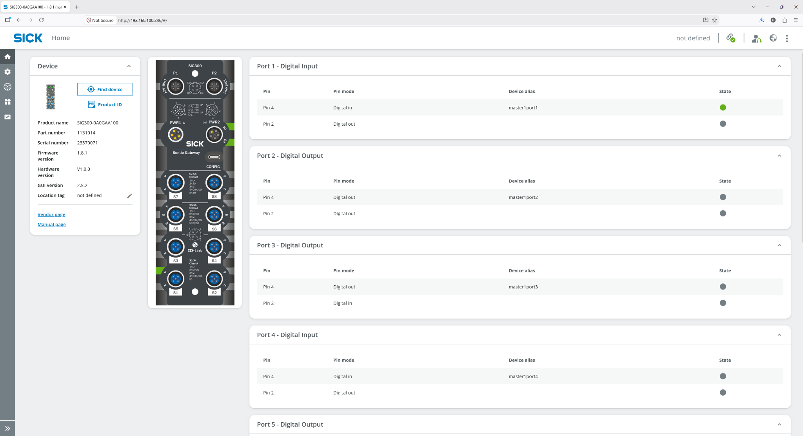
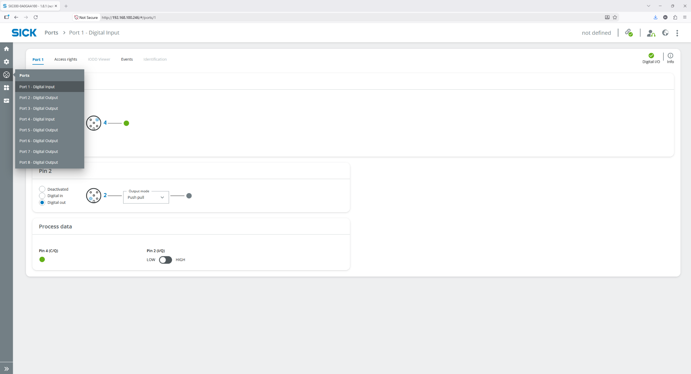
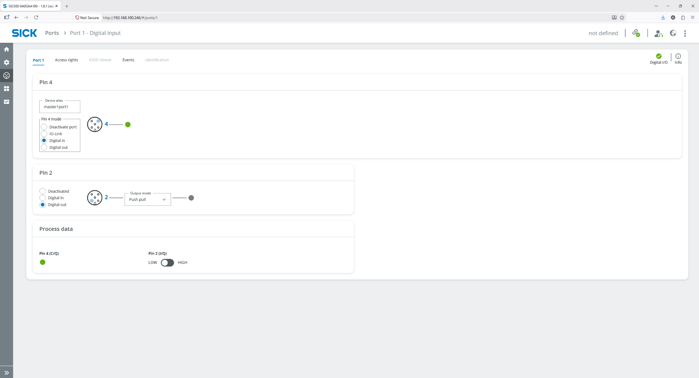

Simple Troubleshooting
Start with the symptom in Monitoring, then open the corresponding management page for detail. Use Log Viewer when the visible status is not enough.
1. Monitoring shows N/A, NG or UNKNOWN
| Symptom | Check | Action |
|---|---|---|
| AI Detected People = N/A | Camera Management → connection, polling and configured people volumes. | Confirm camera network, port, endpoint and evaluation IDs. Do not interpret N/A as zero. |
| Fall Detection = N/A | Camera has fall evaluation IDs and is connected. | Confirm Visionary Field Evaluation configuration and IDs. |
| System Trust = NG | Camera availability, Alarm gateway, gate state. | Open Camera/Gateway/Gate details and restore missing source. |
| Site Safety = UNKNOWN | Required facts are not yet complete. | Wait for startup initialization or restore unavailable sources. |
| Site Safety = UNSAFE | Camera/alarm gateway unavailable, unknown gate, mismatch or gate fault. | Use the individual metrics and device pages to identify the exact condition. |
2. Gateway is Disconnected / Unavailable
- Check power and Ethernet connectivity to the SIG300.
- Confirm the IP in Gateway Device Management matches the device.
- Open Details and review Connection, Initialization, Failures and Last Error.
- Use Refresh pin states after connectivity is restored.
- The default logic marks the gateway unavailable after 3 consecutive communication failures. Initialization/retry loops continue attempting recovery.
- If repeated failures continue, open Log Viewer and inspect Gateway-related errors.
3. Manual SIG300 I/O recovery from the device WebUI
If AI LOTO Monitoring is hung, unavailable, or cannot complete a gate transition, an authorized maintenance person can inspect and, when permitted by the site procedure, manually operate the configured SIG300 I/O from the SIG300 WebUI. Use this only as a controlled recovery/diagnostic action. It does not replace the approved LOTO or machine-safety procedure.
3.1 Open the SIG300 WebUI and identify the correct gateway
- From a PC on the approved machine network, open http://<SIG300-IP>/.
- Confirm that the device is the intended Gate Control SIG300 or Alarm SIG300. Use the IP/addressing defined in Gateway Device Management and the panel reference tables.
- On the Home page, review the configured pin modes and current states before making any change.

3.2 Select the required port
- Open Ports from the left navigation.
- Select the port assigned to the required gate/output. Do not guess: use the Panel A / B / C I/O assignment table in this manual or the Gateway Device details in AI LOTO Monitoring.
- Confirm that the selected pin mode matches the approved configuration. Do not change pin direction during normal recovery unless correcting a known configuration error.

3.3 Read an input or manually operate a digital output
For a configured Digital in, the state is read-only and should be used to verify physical feedback such as the FlexLock AUX signal. For a configured Digital out, the Process data area provides a LOW/HIGH control. The configured output mode should remain as commissioned (for example, Push pull in the supplied setup).

| Manual gate action | Required sequence on Gate Control SIG300 | What to verify |
|---|---|---|
| Open gate |
1. Set FlexLock DO LOW / OFF 2. Wait for FlexLock AUX DI OFF 3. Set MB1 Sol solenoid DO HIGH / ON |
Do not energize MB1 Sol until AUX confirms OFF. |
| Close gate |
1. Set MB1 Sol solenoid DO LOW / OFF 2. Wait for FlexLock AUX DI ON 3. Set FlexLock DO HIGH / ON |
Do not energize FlexLock until AUX confirms ON. |
For the Alarm SIG300, the Green, Orange, Red, Worker Fall and Inside Mismatch outputs are independent software-controlled DOs. Manual toggling should be limited to controlled test/recovery work; restore the outputs to the expected state before returning control to AI LOTO Monitoring.
3.4 Return control to AI LOTO Monitoring
- Record any manual I/O change made during recovery.
- Restore the gate to a known physical state and confirm the AUX feedback matches that state.
- Restore any manually forced alarm output to the expected state.
- Recover/restart AI LOTO Monitoring according to the site procedure.
- Open Gateway Details and Gate Details, refresh pin states, and confirm software and physical states agree before normal operation resumes.
4. Gate stuck OPENING / CLOSING or FAULT
Open Gate Details and check the current transition step:
- Waiting AUX OFF: verify the FlexLock AUX input physically becomes OFF during opening.
- Waiting AUX ON: verify AUX becomes ON during closing.
- Gateway Offline: restore SIG300 connectivity first.
- Failed to open / close: inspect pin states and Last Error, then Retry only after the physical cause is safe/cleared.
5. BioStar authentication happens but no LOTO event appears
- Confirm BioStar itself records a successful IDENTIFY/VERIFY authentication.
- Confirm the BioStar WebSocket URL and credentials in LOTO Settings.
- Confirm Gate Access Device Management contains the same BioStar Device ID.
- Confirm that Access Device is enabled and assigned to the correct Gate.
- Check whether repeated scans happened inside the debounce window.
- Open Log Viewer for BioStar connection/event errors.
6. Embedded BioStar 2 page does not open
- Check BioStar2 Base URL, Web URL, Login ID and Login Password in Settings.
- Verify the server can reach BioStar over HTTPS.
- If the on-premise BioStar certificate is self-signed and approved for the deployment, enable Allow Self-Signed Certificate for backend calls.
7. TCP Search cannot find a Suprema access device
- Verify that the IP entered in LOTO is the scanner's own IP, not the BioStar or LOTO server address.
- Verify the scanner already has that IP assigned. LOTO TCP Search does not assign or change the scanner IP.
- Check for a duplicate IP. Two devices must never share the same address.
- Verify the subnet mask/default gateway and VLAN routing are correct for the approved site network.
- From the BioStar server, verify the scanner is reachable and that its configured device port is accessible.
- Verify the device communication port; the standard Suprema device port is 51211.
- If the scanner uses Device → Server, confirm it points to the correct BioStar server and check the waiting-device workflow.
- If the device was already added directly in BioStar, use Sync from BioStar in LOTO.
- Use BioStar's own Device / Advanced Search when you need to separate a BioStar/network issue from a LOTO UI issue.
8. Camera shows Disconnected
- Ping the Visionary camera and confirm its HTTP API port is reachable.
- Verify the Human Count Endpoint spelling and method.
- Verify the people-count and fall-detection evaluation IDs exist on the camera.
- Open Log Viewer and check for camera connection or request errors.
9. Floor plan not shown on Monitoring
- Confirm a floor plan has been uploaded and is marked Active.
- Confirm the selected theme is supported by the floor plan (Light, Dark, or Both).
- Confirm the required gates have been placed on the active floor plan.
- Refresh Monitoring if the latest layout changes are not shown immediately.
10. Worker count is wrong
- Use Access Event Historian to review the worker's ENTER and EXIT sequence.
- Check whether the worker entered through one gate and exited through another before making any manual correction.
- An authorized user can use Tag Out to correct an active worker state when operationally appropriate.
- Remember that manual Gate Open/Close operations do not change the worker count.
11. What to collect for SICK support
- Record the exact time of the issue and the affected Gate, worker, or device.
- Capture a screenshot of Monitoring and the affected Gate, Gateway, or Camera Details.
- Record the relevant Access Event Historian entry.
- Download the Log Viewer output covering the time of the issue.
- Record whether the problem can be reproduced and what physical state was observed.